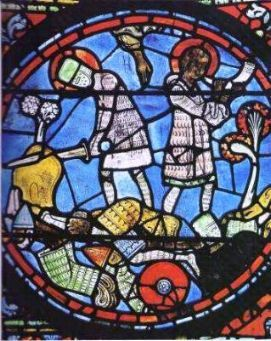

Forums galactiques > Assemblée Galactique : diplomatie officielle > CharleMagne
Pages : 1 2
| CharleMagne Respect diplomatique : 137 22/10 ETU 09:55  | Score : 0 Détails Je vous remercie de votre intervention Commandant Etic,
Même si je perçois un fond de sarcasme dans vos paroles, vous me donnez l'opportunité de rappeler que ce n'est absolument pas seulement par les armes que je combats la barbarie ; elle est pour moi un adversaire constant et redoutable que je rencontre partout, aux frontières comme au sein même de mes vastes Etats. Etant moi-même passionné pour les cérémonies romaines et le chant grégorien, je m'appliquerai à la musique sacrée avec la même ardeur ; car je me pique de faire ma partie au lutrin, et je chants en ch?ur (d ordinaire à mi-voix). Dans l'Académie que j'ai fondée dans mon palais l'on enseigne la grammaire, la musique, l'arithmétique et la géométrie. Je serais donc très heureux de vous fournir, à vous comme a quiconque le veuille, un instrument de musique pour que vous vous exprimiez dans cet art. CharleMagne roi des Francs et des Lombards. Vador, lisez avec plus d'attention, je viens d?écrire .. pas seulement par les armes que je combats la barbarie .... | ||
| Eghinard Respect diplomatique : 111  25/11 ETU 17:28 | Score : 0 Détails Je me permets de faire remonter ce post ancien ou nous effectuons nos presentations.
Ceci pour repondre à Thorn. L'idee de finacement n'a pas de sens. Ces deux mille milliards ne sont pas "à moi" mais à l'empire qui decide entre ses chevaliers comment mieux les utiliser. Je ne "soutiens" pas le tres fameux roi Charles, je le sers, comme vous pourrez le lire dans ma presentation. Sur ce je reitere de n'avoir aucune crainte, mais vous pourrez retrouver tout ca dans les posts programmatiques de l'empereur. L'empire est puissant. L'empire est juste. L'empire est pacifique. Merci de votre attention. | ||
| yable Respect diplomatique : 250  26/11 ETU 11:23 | Score : 0 Détails Commandant,
Puis je me permettre de corriger quelque peu votre dernière affirmation ? L'empire est puissant, juste envers ceux qui le servent, pacifique envers qui ne représentent aucune menace pour lui. |
Pages : 1 2
Forums galactiques > Assemblée Galactique : diplomatie officielle > CharleMagne